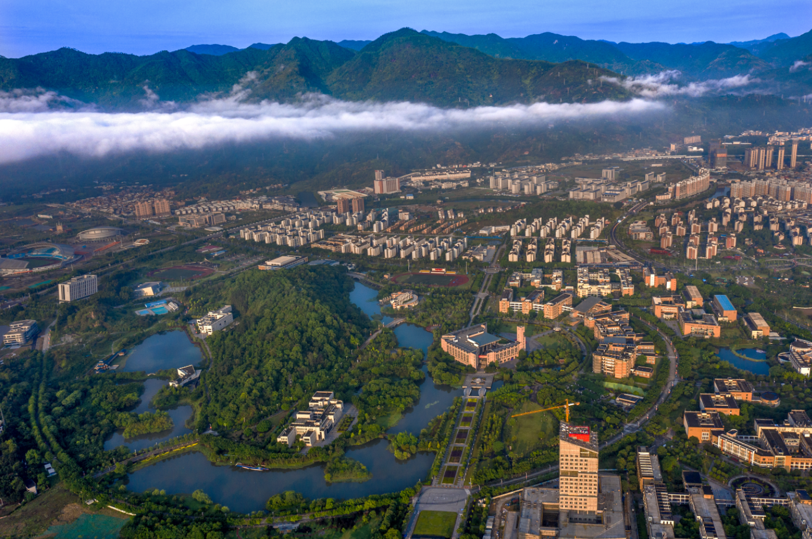

校史时间轴
回顾福州大学66年来的光辉历程
1958
福州大学正式成立

福州大学正式成立，成为福建省重点建设的高水平大学。学校以工为主、理工结合，开启了培养社会主义建设者和接班人的历史使命。
1978
恢复招生 迎来春天

学校恢复招生，迎来改革开放后的第一批学生。教育事业重新焕发生机，为国家和区域发展培养了大批优秀人才。
1996
进入"211工程"

福州大学进入国家"211工程"重点建设大学行列，标志着学校办学水平迈上新台阶，开启了快速发展的新篇章。
2017
入选"双一流"

学校入选国家"双一流"建设高校，化学学科入选世界一流学科建设名单，办学实力和影响力进一步提升。
2024
科技奖励再创佳绩

福州大学在2024年度福建省科学技术奖励评选中荣获佳绩，共获得24项奖励，获奖总数为省属高校第一，其中一等奖5项。